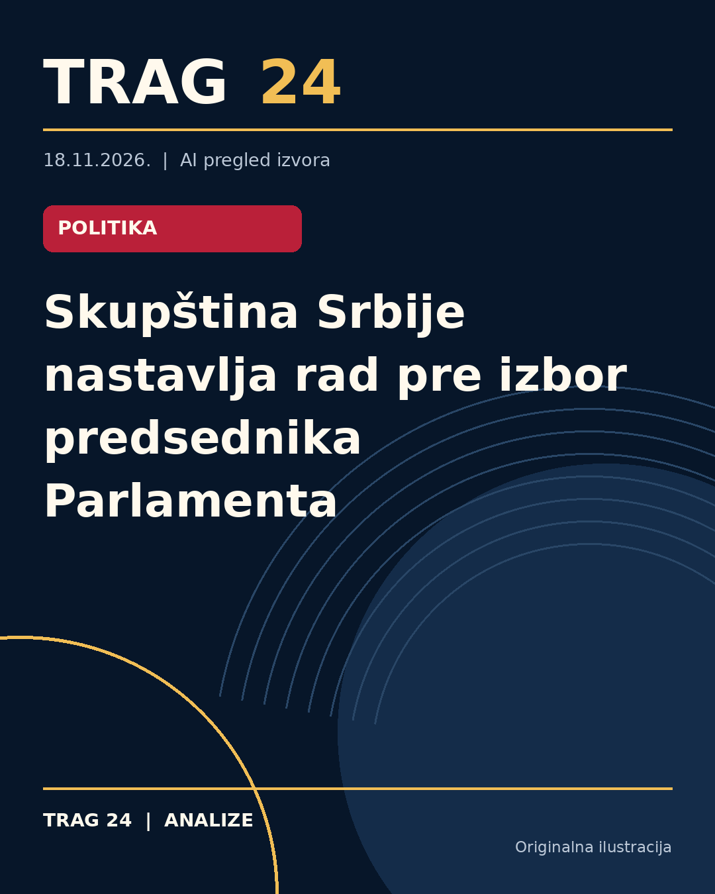

Skupština Srbije nastavlja rad pre izbor predsednika Parlamenta

ŠTA SE DOGODILO
Poslanici Skupštine Srbije danas nastavljaju rad i na dnevnom redu je izbor predsednika Parlamenta. Kandidat vladajuće Studentske liste za ovu funkciju je Aleksandar Čupić. Pored izbora predsednika, biće izabrani i potpredsednici Parlamenta, generalni sekretar, članovi skupštinskih tela te stalne parlamentarne delegacije u međunarodnim institucijama.
HRONOLOGIJA
Nakon oktobarskih parlamentarnih izbora verifikovani su mandati 250 narodnih poslanika. Juče su potvrđeni mandati i time je okončana osnovna procedura za nastavak konstitutivne sednice. Danas u 10 časova počinje nastavak sednice na kojem se očekuje izbor predsednika i drugih zvaničnika Parlamenta. Do izbora predsednika, sednicom predsedava najstariji narodni poslanik Stojan Radenović iz opozicione koalicije „Srbija pobeđuje“.
ŠTA NAVODE IZVORI
Sva tri izvora slažu se da je Aleksandar Čupić kandidat za predsednika Skupštine Srbije sa predloga Studentske liste, koja ima 140 mandata. Imena kandidata opozicione koalicije „Srbija pobeđuje“ su takođe ista – Stojan Radenović. Predstavnici Studentske liste, uključujući Jovu Bakića i Jugoslava Gašića, naglašavaju da autoritet kandidata Čupića počiva na moralnom integritetu. Na dnevnom redu su i drugi izbori unutar Parlamenta, uključujući potpredsednike i ostale funkcije.
ŠTA JE POTVRĐENO
Potvrđeni su mandati 250 narodnih poslanika sa raspodelom: Studentska lista 140 mandata, koalicija "Srbija pobeđuje" 103 mandata, i devet mandata manjinskih stranaka. Izabran će biti predsednik i potpredsednici Skupštine, kao i generalni sekretar i članovi skupštinskih tela. Sednicom do izbora predsednika predsedava najstariji poslanik. Postoje nominacije kandidata za predsednika Parlamenta sa obe strane.
ŠTA NIJE POTVRĐENO
Dosadašnji podaci ne potvrđuju ishod glasanja za predsednika Parlamenta. Nema zvaničnih informacija o potencijalnim odstupanjima u glasovima ili mogućim promenama u složenosti izbora potpredsednika i drugih funkcija. Nije poznato da li će biti političkih dogovora koji bi mogli uticati na rezultate izbora ili sastav skupštinskih tela.
ŠTA OSTАJE OTVORENO: Ostaje da se vidi da li će Aleksandar Čupić biti izabran za predsednika Skupštine Srbije danas, kao i ko će sve zauzeti potpredsedničke i druge funkcije. Takođe nije poznato na koji način će se dalje odvijati politička dinamika između Studentske liste i opozicionih grupa u parlamentu, niti kakve će biti reakcije na izabrane članove skupštinskih tela.
Izvori
- https://www.danas.rs/vesti/politika/skupstina-predsesnik-parlamenta/
- https://nova.rs/vesti/politika/skupstina-srbije-danas-nastavlja-rad-bira-se-predsednik-parlamenta/
- https://n1info.rs/vesti/skupstina-srbije-danas-nastavlja-rad-bira-se-predsednik-parlamenta/
Ova analiza je pripremljena uz pomoć veštačke inteligencije na osnovu javno dostupnih izvora. Navodi izvora nisu nužno nezavisno potvrđeni.